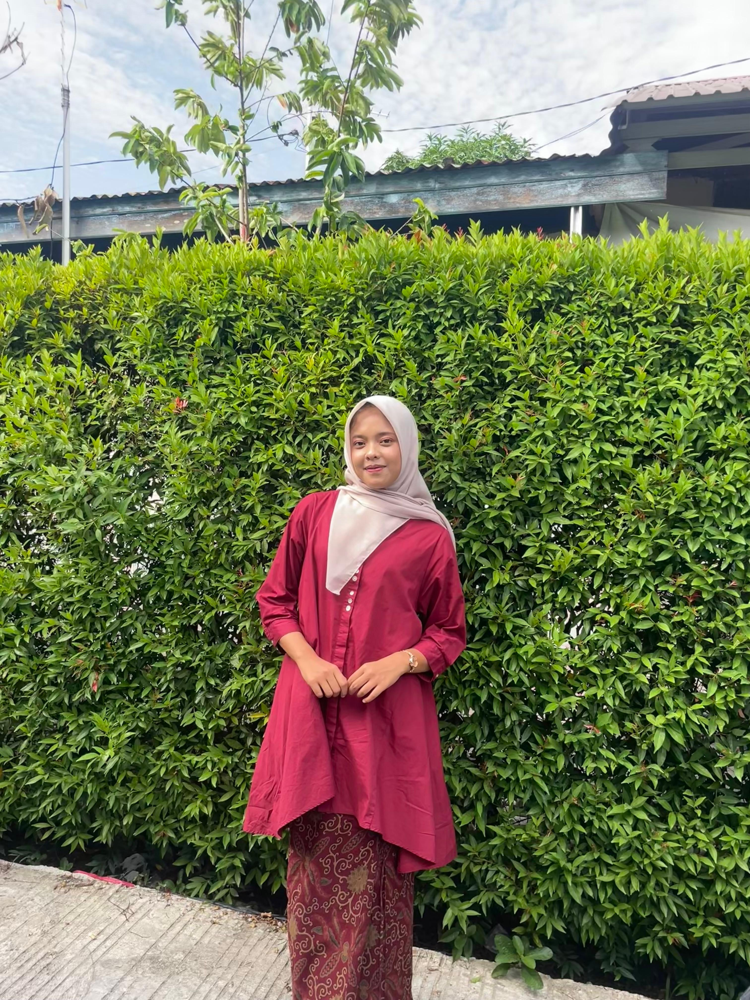
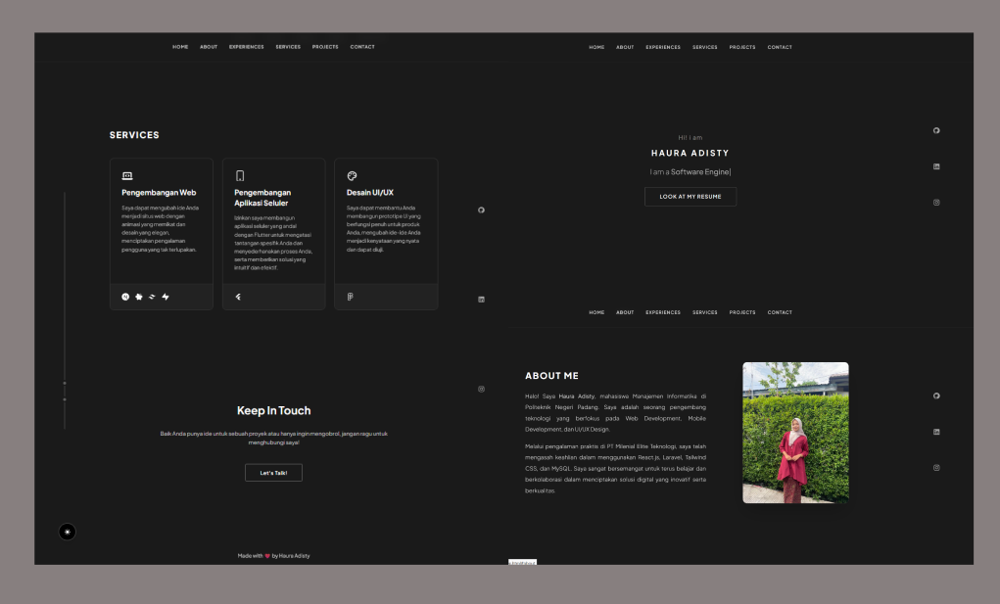

I am a
Halo! Saya Haura Adisty, mahasiswa Manajemen Informatika di Politeknik Negeri Padang. Saya adalah seorang pengembang teknologi yang berfokus pada Web Development, Mobile Development, dan UI/UX Design.
Melalui pengalaman praktis di PT Milenial Elite Teknologi, saya telah mengasah keahlian dalam menggunakan React.js, Laravel, Tailwind CSS, dan MySQL. Saya sangat bersemangat untuk terus belajar dan berkolaborasi dalam menciptakan solusi digital yang inovatif serta berkualitas.

Mengembangkan website profil perusahaan yang mencakup integrasi sistem frontend dan backend. Membangun antarmuka yang responsif serta mengelola panel admin untuk pembaruan konten secara dinamis dan efisien.
Saya dapat mengubah ide Anda menjadi situs web dengan animasi yang memikat dan desain yang elegan, menciptakan pengalaman pengguna yang tak terlupakan.
Izinkan saya membangun aplikasi seluler yang andal dengan Flutter untuk mengatasi tantangan spesifik Anda dan menyederhanakan proses Anda, serta memberikan solusi yang intuitif dan efektif.
Saya dapat membantu Anda membangun prototipe UI yang berfungsi penuh untuk produk Anda, mengubah ide-ide Anda menjadi kenyataan yang nyata dan dapat diuji.
Saya membuat situs web portofolio ini untuk memamerkan berbagai proyek yang telah saya kerjakan, serta menampilkan pengalaman kerja dan informasi kontak agar siapa pun dapat dengan mudah menghubungi saya. Website portofolio ini saya bangun menggunakan HTML sebagai dasar struktur halaman, sehingga tampilan informasi dapat tersusun dengan rapi dan mudah diakses oleh pengunjung.

Baik Anda punya ide untuk sebuah proyek atau hanya ingin mengobrol, jangan ragu untuk menghubungi saya!
Let's Talk!